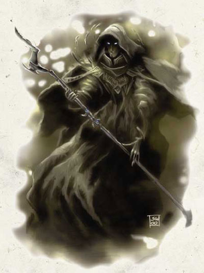

哈杰霍纳(Hadrhune)
男性阴魂生物(Shade) 法师10级/幽影导师10级 挑战等级(CR)：22
中等体型外界生物
生命骰数：10d4+10+10d4+10；生命值：77；
先攻权：+9；
速度：30英尺；
防御等级：25 (接触15，措手不及20)；
攻击：+11/+6近战 (1d6+1/+1d10冰系伤害，哈杰霍纳的黑杖)
或+15/10远程接触 (通过法术)
特性：幽影导师职业特性；法术抗力17
阵营：中立邪恶；
豁免检定：强韧+12，反射+18，意志+23
属性：力量10，敏捷20，体质13，智力21，感知14，魅力14
身高：6英尺；
技能和专长：炼金术+15，唬骗+12，专注+24，手艺(木雕)+8，交涉+12，躲藏+15，威吓+4，知识(奥术)+25，知识(位面)+25，聆听+7，探知+25，搜索+9，辩识法术+25，侦察+7；
战斗施法，制造法杖，制造奇物，精通先攻，钢铁意志，影魔隐匿(Insidious Magic)，法术瞬发，抄写卷轴，影魔网法术(Shadow Weave Magic)，法术默发，法术穿透，施法天才(Spellcasting Prodigy)，影魔顽性(Tenacious Magic)。
当位于黑暗或阴影中时：
生命值：97；
速度：50英尺；
防御等级：29(接触19，措手不及24)；
攻击：+13/+8近战(1d6+3/+1d10冰系伤害，哈杰霍纳的黑杖)，
或+17/+12远程接触(通过法术)；
特性：阴魂生物特质，幽影导师职业特性；法术抗力31；
豁免检定：强韧+17，反射+22，意志+27；
属性：力量10，敏捷20，体质17，智力21，感知14，魅力18；
在黑暗或阴影中的技能：唬骗+13，专注+25，交涉+5，易容+13，躲藏+23，威吓+5，听力+11，潜行+13，侦察+11；
特性描述：阴魂生物特质：控光(Control Light)，快速医疗(Fast Healing) 2点，隐形，阴魂视觉(Shadesight)，幽影幻象(Shadow Image)，幽影跨越(Shadow Stride)，幽影传送(Shadow Travel)；
幽影导师职业特性：黑暗视觉，昏暗视觉，幽影防御(Shadow Defense)+3，幽影复制(Shadow Double)，行影(Shadow Walk)，幽影护盾(Shield of Shadows)每日10轮，法力增长+3；
每日施法：(0-9) 4/6/6/5/5/5/5/4/4/4；基础DC=19+法术能级；附魔系、幻术系、死灵系、以及所有带黑暗性质描述的法术DC=20+法术能级；
法术书：作为一名阴魂城里最强大也最有势力的法师，哈杰霍纳拥有一座巨大的魔法藏书馆，其中包括了本书(FRCS)中的所有法术，以及玩家手册中所有来自附魔系、幻术系、和死灵系，还有那些带有黑暗性质描述的法术。
装备：哈杰霍纳的黑杖(+1・冰爆・木棍(法杖)，并储有法术：能量吸取，格林沃德的灰斗篷(Grimwald''s graymantle)，投影术，幽影喷射(Shadow spray)，共计33发施放能力)，黑色大法师之袍，敏捷手套+6，速度靴，天生防御护符+5，抗力披风+5，法力再生珍珠(第7能级)，奥术卷轴：支配怪物，凋死术，集体魅惑，女妖之嚎，怪影杀手。
冷酷，工于心计，并且邪恶，哈杰霍纳凭借着他的才干，果断，和对敌对势力的操弄而爬升到了阴魂城权力阶层的最顶峰。他的地位仅次于至高城主泰拉曼特――阴魂城的统治者，身为他的私人使者和代言人。
作为一名强大的法师，他并不顾忌通过制造魔法物品来弥补自身的施法能力，或是利用它们来充当贿赂品；哈杰霍纳暗中利用间谍监视着他的下属和竞争者们，他刺探着那些拥有强大力量者的情报，籍此来保护他自己的利益或是清除对于自己的威胁。哈杰霍纳对目前这个世界的形势非常好奇，他频繁地通过探知类魔法或是其它的预言系法术来搜集附近地区的信息。他也许是阴魂生物中对费伦核心地带所发生的那些事件了解最多的，也正是他在计划着摧毁阴魂城周围的城市，以免泄露阴魂城回归的消息，因为他知道现世的施法者以及冒险者们会对他和他的人民正在进行的那些计划构成威胁。他散布在费伦上的间谍收集着有关耐色瑞尔遗迹的传闻，以及那些强大的著名操法者们的情报。
哈杰霍纳始终是一个野心勃勃的人，他计划着当阴魂生物们征服费伦之后，设法使自己被委任为拖雷(Thay)或是北地的统治者，这样他就可以占有红衣巫师的魔法，或是得到山渊地(Undermountain)的那些隐藏的密宝。目前相对而言，他还算年轻，不过一旦他的身体开始让他失望，那么哈杰霍纳会更倾向于步上成为不死生物的延生之道。
哈杰霍纳的标志性魔法物品是他的黑色法杖，他籍此来惩戒那些无能的部下，以及对抗那些嫉妒他地位的城主们。虽然他平时非常地冷静，并能很好地控制住自己的一举一动，然而当他被激怒的时候，他的拇指会不知不觉地在这把黑色法杖的握柄上来回地摩擦，法杖上因此而形成了一个凹痕。有时候，这柄法杖会从这个凹痕处泄漏出一丝丝无害的黑色能量。